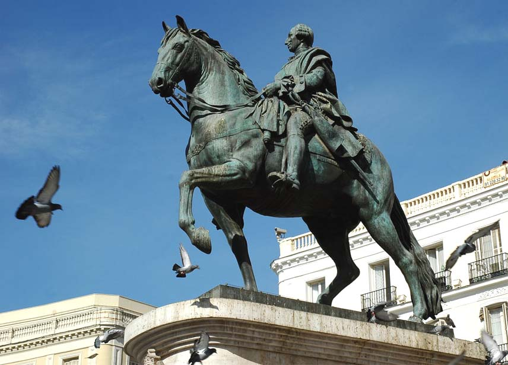
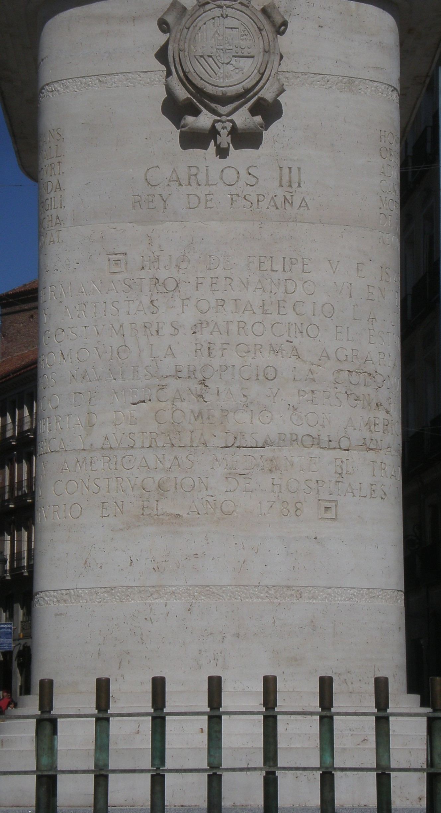

Carlos III es conocido por muchos entusiastas de la Historia como uno de los mejores reyes de España, y recibe el apodo de "mejor alcalde de Madrid", de ahí que se quiera hacer una estatua en su honor.

La estatua
Carlos III reinó entre 1759 y 1788, llegando al trono a la edad de 43 años y ya habiendo sido rey de Nápoles y de Sicilia, por lo que ya tenía experiencia como rey.
En lo que a Madrid respecta, introdujo medidas como la policía urbana las 24 horas, la recogida de basura, el sistema de limpieza, el alumbrado, el alcantarillado, y construyó una gran variedad de edificios y monumentos (como Cibeles, el Museo del Prado, la Puerta de Alcalá, la Real Casa de Correos, entre muchos otros).
Por otro lado, en el ámbito nacional, introdujo cosas como la Seguridad Social, el papel moneda, el primer banco (el de San Carlos) y la bandera y el himno actuales, limitó el poder de la Inquisición, acabó con la persecución de minorías étnicas, impulsó la educación, e hizo muchas otras cosas que harían que este artículo sea aún más largo de lo que ya es.

Retrato de Carlos III
La estatua mide 9 metros contando su enorme pedestal, que contiene una inscripción que hace falta dar varias vueltas a la estatua para poder leer en su totalidad, al igual que en la Columna Trajana de Roma.

Uno de los lados del pedestal, con una parte de la inscripción
Para ampliar la imagen, clic derecho -> Abrir imagen en una pestaña nueva